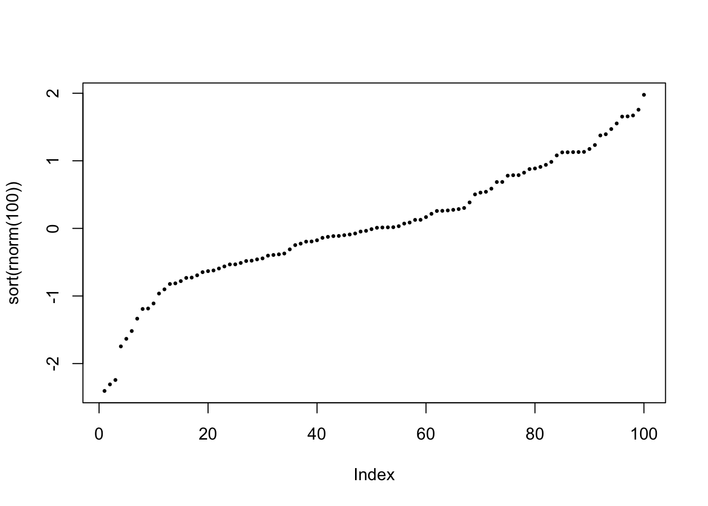
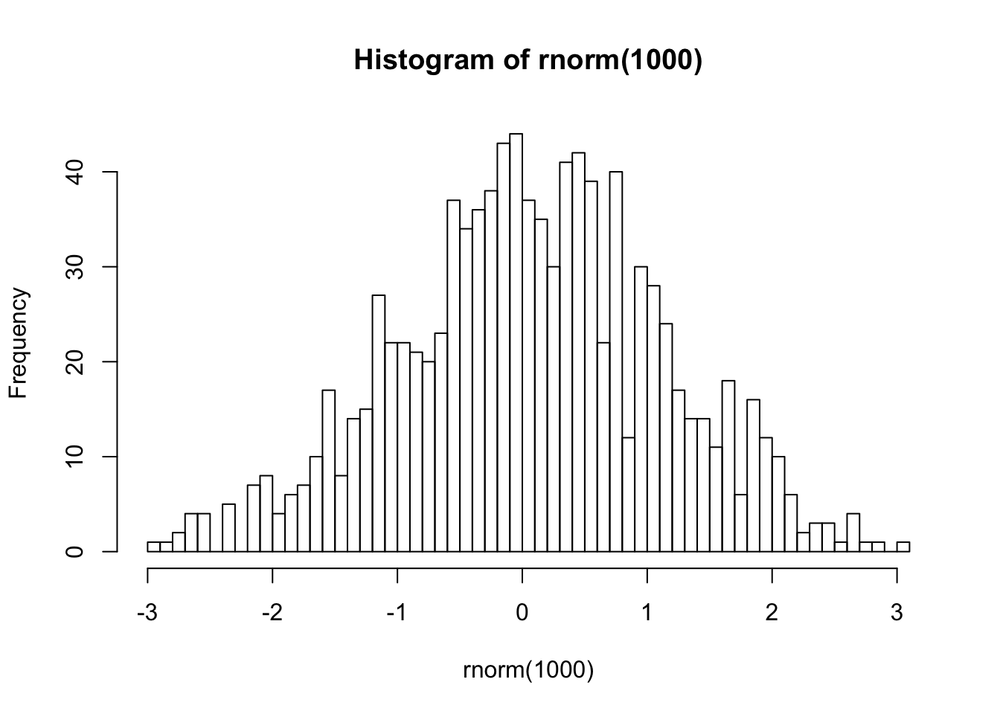
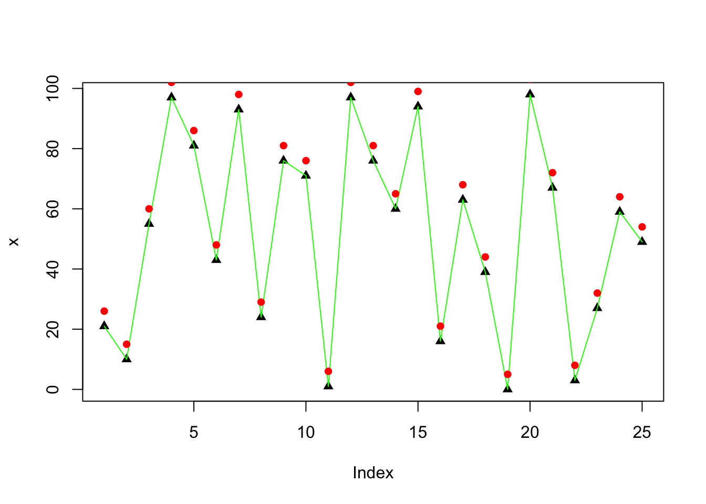

Bases de R
1 Installation des packages
Dans RStudio, il est possible d’exécuter le code ligne à ligne en faisant Ctrl+Entrée.
Dans R, il existe de nombreux packages qu’il est possible d’importer. Ainsi, on pourra utilier des données et des fonctions qui sont contenues dans ces packages.
Pour installer un package,
- sous RStudio, il est possible d’utiliser le bouton “Install” dans l’onglet “Packages”
- il est possible d’exécuter le code suivant
install.packages("nom_du_package")Ensuite, pour charger le package, il faut exécuter le code suivant:
library("nom_du_package")2 Environnement
x=3.14159; y='hello world'; z=TRUE # create some objects. In RStudio they'll appear in 'Workspace'
ls() # list the objects in the Workspace## [1] "a" "agg" "arry"
## [4] "bgg" "bool" "bubbles"
## [7] "caracteristiques" "centres" "char"
## [10] "chorogg" "choropleth" "cities"
## [13] "co" "col" "color"
## [16] "county_df" "CP" "CP2"
## [19] "cpc" "cpcn" "cpcn.co"
## [22] "cpcn.model" "d" "d1"
## [25] "d2" "danish" "data"
## [28] "data2" "dens" "dep"
## [31] "dev" "df" "dict"
## [34] "dt" "DT" "DT2"
## [37] "f" "f.complet" "f.tail"
## [40] "factr" "ff" "fr"
## [43] "france" "frank" "fullRAA"
## [46] "fullratio" "g" "geoloc"
## [49] "ggMplot" "h" "i"
## [52] "info" "Ins" "k"
## [55] "KernelEst" "l" "lst"
## [58] "m" "mack" "match"
## [61] "matrx" "mcor" "mid_range"
## [64] "Motion" "multiply" "mydata"
## [67] "n" "newrow" "newVar"
## [70] "num" "obs" "op"
## [73] "p" "PP" "probs"
## [76] "qqd" "RAAnc" "repar"
## [79] "res" "rho" "rp"
## [82] "RR" "s" "sb"
## [85] "sigma" "sp" "sp500"
## [88] "sp500.monthly" "state_df" "sumInsects"
## [91] "sumWB" "tail" "tail.model"
## [94] "TG" "TN" "ts"
## [97] "TX" "unemp" "vec"
## [100] "warpbreaks" "wc" "x"
## [103] "xat" "y" "z"print(y) # print information to R 'Console'## [1] "hello world"rm(y) # remove an object
rm(list=ls()) # remove all
# getwd() # find current working directory
# setwd("/Users/robinedwards/Documents") # set working directory as preferred
print ( "R ignores the 'white-space' in command syntax" ) ## [1] "R ignores the 'white-space' in command syntax"# use '?' for help on any R function (if its library is loaded in the session)
# ?max
# ??csv # search for a text string in R documentation library
# library(help=utils) # get help on a particular package (list its functions)
# 'str' is a powerful tool for investigating the underlying structure of any R object
str(max)## function (..., na.rm = FALSE)3 Objects sous R
3.1 Vector
# assigning values to variables
n = 5 # is possible but
n <- 5 # is preferable, or..
5 -> n
rm(n)
# R objects can be of various data types, but probably most common are 'numeric' and 'character'
( num <- 3.14 ) # note that bracketing an instruction also prints it to the console## [1] 3.14( char <- 'any text string' )## [1] "any text string"# create a VECTOR (array) using the 'c()' concatenate function
( vec <- c(2,5,8,3,7) )## [1] 2 5 8 3 7# a vector series
( vec <- 10:20 )## [1] 10 11 12 13 14 15 16 17 18 19 20# R vectors can be accessed in various ways using [ ] brackets
vec[3]## [1] 12vec[3:6]## [1] 12 13 14 15vec[ c(1,3,8) ]## [1] 10 12 17vec[vec > 15]## [1] 16 17 18 19 20# check a vector contains a value
5 %in% vec## [1] FALSE12 %in% vec## [1] TRUE# finding first index position of a matching value/sting
( x = c('one', 'five', 'two', 3, 'two') )## [1] "one" "five" "two" "3" "two"match('two', x)## [1] 3match(c('two','five'), x)## [1] 3 23.2 Matrix
# a MATRIX is a 2D vector (essentially a vector of vectors) of matching data type
( matrx = matrix(1:15, 3, 5) )## [,1] [,2] [,3] [,4] [,5]
## [1,] 1 4 7 10 13
## [2,] 2 5 8 11 14
## [3,] 3 6 9 12 15( matrx <- 1:12 ) # vector to a matrix## [1] 1 2 3 4 5 6 7 8 9 10 11 12dim(matrx) <- c(3,4)
print(matrx)## [,1] [,2] [,3] [,4]
## [1,] 1 4 7 10
## [2,] 2 5 8 11
## [3,] 3 6 9 12t(matrx) # a matrix can be easily transposed## [,1] [,2] [,3]
## [1,] 1 2 3
## [2,] 4 5 6
## [3,] 7 8 9
## [4,] 10 11 123.3 Array
# an ARRAY is a generic vector but with more flexibiity. A 1D array is the same as a normal vector,
# and a 2D array is like a matrix. But arrays can store data with 'n' dimensions:
( arry <- array(1:24, dim=c(4,3,2)) )## , , 1
##
## [,1] [,2] [,3]
## [1,] 1 5 9
## [2,] 2 6 10
## [3,] 3 7 11
## [4,] 4 8 12
##
## , , 2
##
## [,1] [,2] [,3]
## [1,] 13 17 21
## [2,] 14 18 22
## [3,] 15 19 23
## [4,] 16 20 24# Using square brackets on arrays
arry[12] # a single criterion (argument) selects the array's n'th record## [1] 12arry[3,1,2] # or use multiple arguments that reflect the array's dimensionality## [1] 15arry[,,2]## [,1] [,2] [,3]
## [1,] 13 17 21
## [2,] 14 18 22
## [3,] 15 19 23
## [4,] 16 20 24arry[,1,]## [,1] [,2]
## [1,] 1 13
## [2,] 2 14
## [3,] 3 15
## [4,] 4 16# 3.4 Data.frame
# a DATA.FRAME is like a matrix, but accomodates fields (columns) with different data types
df <- data.frame(name = c('Matt','Kate','Jacquie','Simon','Nita'),
age = c(35,29,32,35,39))
# They can be viewed easily
# View(df)
# examine their internal stucture
str(df)## 'data.frame': 5 obs. of 2 variables:
## $ name: Factor w/ 5 levels "Jacquie","Kate",..: 3 2 1 5 4
## $ age : num 35 29 32 35 39# data interrogation with square brackets
df[1,]## name age
## 1 Matt 35df[2:3,]## name age
## 2 Kate 29
## 3 Jacquie 32df[,1]## [1] Matt Kate Jacquie Simon Nita
## Levels: Jacquie Kate Matt Nita Simondf[2,1]## [1] Kate
## Levels: Jacquie Kate Matt Nita Simon# data.frame and matrix objects can have field (column) and record (row) names
dimnames(df)## [[1]]
## [1] "1" "2" "3" "4" "5"
##
## [[2]]
## [1] "name" "age"colnames(df)## [1] "name" "age"names(df) # not for matrix objects## [1] "name" "age"row.names(df)## [1] "1" "2" "3" "4" "5"# interrogate data.frames by field name using the '$' operator. the result is a simple vector
df$name## [1] Matt Kate Jacquie Simon Nita
## Levels: Jacquie Kate Matt Nita Simondf$name[2]## [1] Kate
## Levels: Jacquie Kate Matt Nita Simon# names can be reassigned
names(df) <- c('person','years')
row.names(df) <- c('R1','R2','R3','R4','R5')
print(df)## person years
## R1 Matt 35
## R2 Kate 29
## R3 Jacquie 32
## R4 Simon 35
## R5 Nita 39# check dimensions of vector/matrix/array/data.frame objects
length(vec)## [1] 11dim(df)## [1] 5 2dim(arry)## [1] 4 3 2nrow(df)## [1] 5ncol(df)## [1] 23.5 Data summary
# R has various inbuilt data.frame datasets used to illustrate how functions operate e.g.
# InsectSprays # this guide makes use of these datasets
# examine contents
head(InsectSprays) # list the top records of a vector / matrix / d.f.## count spray
## 1 10 A
## 2 7 A
## 3 20 A
## 4 14 A
## 5 14 A
## 6 12 Atail(InsectSprays, n=3) # bottom the 3## count spray
## 70 26 F
## 71 24 F
## 72 13 Fsummary(InsectSprays) # summarise a data vector## count spray
## Min. : 0.00 A:12
## 1st Qu.: 3.00 B:12
## Median : 7.00 C:12
## Mean : 9.50 D:12
## 3rd Qu.:14.25 E:12
## Max. :26.00 F:12# aggregate() is a powerful function for summarising categorical data
aggregate(InsectSprays$count, by=list(InsectSprays$spray), FUN=mean)## Group.1 x
## 1 A 14.500000
## 2 B 15.333333
## 3 C 2.083333
## 4 D 4.916667
## 5 E 3.500000
## 6 F 16.666667sumInsects <- aggregate(InsectSprays$count, by=list(InsectSprays$spray), FUN=sum)
names(sumInsects) <- c('group', 'sum')
print(sumInsects)## group sum
## 1 A 174
## 2 B 184
## 3 C 25
## 4 D 59
## 5 E 42
## 6 F 200# subset/apply filter to a data.frame
warpbreaks[warpbreaks$wool=='A',] # by 1 condition## breaks wool tension
## 1 26 A L
## 2 30 A L
## 3 54 A L
## 4 25 A L
## 5 70 A L
## 6 52 A L
## 7 51 A L
## 8 26 A L
## 9 67 A L
## 10 18 A M
## 11 21 A M
## 12 29 A M
## 13 17 A M
## 14 12 A M
## 15 18 A M
## 16 35 A M
## 17 30 A M
## 18 36 A M
## 19 36 A H
## 20 21 A H
## 21 24 A H
## 22 18 A H
## 23 10 A H
## 24 43 A H
## 25 28 A H
## 26 15 A H
## 27 26 A Hwarpbreaks[warpbreaks$tension %in% c('L','M'),] # multiple conditions## breaks wool tension
## 1 26 A L
## 2 30 A L
## 3 54 A L
## 4 25 A L
## 5 70 A L
## 6 52 A L
## 7 51 A L
## 8 26 A L
## 9 67 A L
## 10 18 A M
## 11 21 A M
## 12 29 A M
## 13 17 A M
## 14 12 A M
## 15 18 A M
## 16 35 A M
## 17 30 A M
## 18 36 A M
## 28 27 B L
## 29 14 B L
## 30 29 B L
## 31 19 B L
## 32 29 B L
## 33 31 B L
## 34 41 B L
## 35 20 B L
## 36 44 B L
## 37 42 B M
## 38 26 B M
## 39 19 B M
## 40 16 B M
## 41 39 B M
## 42 28 B M
## 43 21 B M
## 44 39 B M
## 45 29 B M# adding entries is possible (if a bit tricky)
(newrow <- data.frame(breaks=42, wool='B', tension='M'))## breaks wool tension
## 1 42 B M(warpbreaks <- rbind(warpbreaks, newrow))## breaks wool tension
## 1 26 A L
## 2 30 A L
## 3 54 A L
## 4 25 A L
## 5 70 A L
## 6 52 A L
## 7 51 A L
## 8 26 A L
## 9 67 A L
## 10 18 A M
## 11 21 A M
## 12 29 A M
## 13 17 A M
## 14 12 A M
## 15 18 A M
## 16 35 A M
## 17 30 A M
## 18 36 A M
## 19 36 A H
## 20 21 A H
## 21 24 A H
## 22 18 A H
## 23 10 A H
## 24 43 A H
## 25 28 A H
## 26 15 A H
## 27 26 A H
## 28 27 B L
## 29 14 B L
## 30 29 B L
## 31 19 B L
## 32 29 B L
## 33 31 B L
## 34 41 B L
## 35 20 B L
## 36 44 B L
## 37 42 B M
## 38 26 B M
## 39 19 B M
## 40 16 B M
## 41 39 B M
## 42 28 B M
## 43 21 B M
## 44 39 B M
## 45 29 B M
## 46 20 B H
## 47 21 B H
## 48 24 B H
## 49 17 B H
## 50 13 B H
## 51 15 B H
## 52 15 B H
## 53 16 B H
## 54 28 B H
## 55 42 B M3.6 List
# but LISTS are better at this
lst = list()
# ways to assign/add items
lst[1] = "one"
lst[[2]] <- "two"
lst[length(lst)+1] <- "three"
print(lst)## [[1]]
## [1] "one"
##
## [[2]]
## [1] "two"
##
## [[3]]
## [1] "three"# data retrieval
lst[[1]] # double brackets means the object returned is of the data class of the list item## [1] "one"lst[2:3] # selecting a more than 1 list item is possible with single brackets..## [[1]]
## [1] "two"
##
## [[2]]
## [1] "three"lst[c(1,3)] # but the object returned (from single bracket interrogation) is a list## [[1]]
## [1] "one"
##
## [[2]]
## [1] "three"# delete list items
lst[[3]] <- NULL
lst[1:2] <- NULL
lst## list()# entries can be any object type (like python), including other lists (double bracketting)
lst[[1]] <- list('subitem1', 2, 3)
lst[[2]] <- 'item2'
lst## [[1]]
## [[1]][[1]]
## [1] "subitem1"
##
## [[1]][[2]]
## [1] 2
##
## [[1]][[3]]
## [1] 3
##
##
## [[2]]
## [1] "item2"lst[[1]][[1]]## [1] "subitem1"# Data in lists can also be stored and recalled by key word/number (like Python's dictionary class)
dict <- list(mon=1, tues=2)
dict['wed'] <- 3
print(dict)## $mon
## [1] 1
##
## $tues
## [1] 2
##
## $wed
## [1] 3dict[['tues']]## [1] 2dict[c('mon','wed')]## $mon
## [1] 1
##
## $wed
## [1] 3# reorder a vector with 'sort'
vec <- c(10,6,2,4,10,2,8,7,1,6)
sort(vec)## [1] 1 2 2 4 6 6 7 8 10 10# or a dataframe with 'order'
df[order(df$years),]## person years
## R2 Kate 29
## R3 Jacquie 32
## R1 Matt 35
## R4 Simon 35
## R5 Nita 393.7 Logical objects
# LOGICAL objects (booleans) are binary true/false objects that facilitate conditional data processing
(bool <- TRUE)## [1] TRUE(bool <- c(TRUE, FALSE, TRUE))## [1] TRUE FALSE TRUE# query an object's data/structure type with 'class()'
class(bool)## [1] "logical"class(num) # numeric is the default data type for number objects## [1] "numeric"class(as.integer(num)) # integer class exists but is not default## [1] "integer"class(char) # character class## [1] "character"class('237' ) # numbers aren't always numeric type## [1] "character"as.numeric('237') # but can be converted## [1] 237as.character(237) # and vice verse## [1] "237"# Child-objects are often of different class to parents
class(df)## [1] "data.frame"class(df[,2])## [1] "numeric"class(df[,1])## [1] "factor"3.8 Factor
# FACTOR objects are vectors of items that have been categorised by unique values
factr <- as.factor(c(10,30,20,10,20,20,30))
str(factr) ## Factor w/ 3 levels "10","20","30": 1 3 2 1 2 2 3levels(factr)## [1] "10" "20" "30"table(factr)## factr
## 10 20 30
## 2 3 2# you may encounter problems converting a factor of numeric data to numeric type
as.numeric(factr)## [1] 1 3 2 1 2 2 3# instead do this
as.numeric(as.character(factr))## [1] 10 30 20 10 20 20 30# editing factors can be tricky
print(df)## person years
## R1 Matt 35
## R2 Kate 29
## R3 Jacquie 32
## R4 Simon 35
## R5 Nita 39df$person[1] <- 'Matthew'
# instead convert to character or numeric etc
df$person <- as.character(df$person)
df$person[1] <- 'Matthew'
df$person <- as.factor(df$person) # coerce back to factor if necessary
levels(df$person)## [1] "Jacquie" "Kate" "Matthew" "Nita" "Simon"4 Structures et fonctions
4.1 Logical operations
2 + 2 == 4 # '==' denotes value equality## [1] TRUE3 <= 2 # less than or equal to## [1] FALSE3 >= 2 # greater than or equal to## [1] TRUE'string' == "string"## [1] TRUE'b' >= 'a' # strings can be ranked## [1] TRUE3 != 3 # NOT operator## [1] FALSEc(4,2,6) == c(4,2,8) # vector comparisons return locical vectors## [1] TRUE TRUE FALSETRUE == T # 'T' and 'F' default as boolean shortcuts (until overwritten)## [1] TRUETRUE & TRUE # AND operator## [1] TRUETRUE | FALSE # OR operator## [1] TRUEF | F## [1] FALSE4.2 If/else statement
# IF/ELSE statement (used in most logical procedures)
x <- 4
if(x < 5){
print('x is less than 5')
} else{
print('x is not less than 5')
}## [1] "x is less than 5"if(T|F) print('single liners can dispense with curly brackets')## [1] "single liners can dispense with curly brackets"if(T&F) print('') else print("but then 'else' only works on the same line")## [1] "but then 'else' only works on the same line"4.3 Looping functions
# LOOPING FUNCTIONS - very useful for handling repetitive operations
# 'FOR' loop
for(i in 1:10){
print(paste('number ',i))
}## [1] "number 1"
## [1] "number 2"
## [1] "number 3"
## [1] "number 4"
## [1] "number 5"
## [1] "number 6"
## [1] "number 7"
## [1] "number 8"
## [1] "number 9"
## [1] "number 10"# WHILE loop (be careful to include safeguards to prevent infinite loops)
i = 30
while(i > 0){
print(paste('number ',i))
i = i - 3
}## [1] "number 30"
## [1] "number 27"
## [1] "number 24"
## [1] "number 21"
## [1] "number 18"
## [1] "number 15"
## [1] "number 12"
## [1] "number 9"
## [1] "number 6"
## [1] "number 3"4.4 Fonctions
# creating a function
multiply <- function(input1, input2){
tot <- input1 * input2
return(tot)
}
multiply(3,5)## [1] 15# note 'tot' wasn't remembered outside the function - functions are contained environments
# if required use '<<-' for global assignment but be careful not to overwrite R's internal objects
# its generally better to do this:
newVar <- multiply(3,5)
# handling 'NA' values
(x = 1:5)## [1] 1 2 3 4 5x[8] = 8
x[3] = NA
print(x) # sometimes functions will fail because of NA values## [1] 1 2 NA 4 5 NA NA 8na.omit(x) # iterates full list but ignores NAs## [1] 1 2 4 5 8
## attr(,"na.action")
## [1] 3 6 7
## attr(,"class")
## [1] "omit"x[na.omit(x)]## [1] 1 2 4 5 8is.na(x) # alternatively## [1] FALSE FALSE TRUE FALSE FALSE TRUE TRUE FALSEx[!is.na(x)]## [1] 1 2 4 5 84.5 Fonctions mathématiques de base
# useful basic math functions
seq(-2, 2, by=.2) # sequence of equal difference## [1] -2.0 -1.8 -1.6 -1.4 -1.2 -1.0 -0.8 -0.6 -0.4 -0.2 0.0 0.2 0.4 0.6
## [15] 0.8 1.0 1.2 1.4 1.6 1.8 2.0seq(length=10, from=-5, by=.2) # with range defined by vector length## [1] -5.0 -4.8 -4.6 -4.4 -4.2 -4.0 -3.8 -3.6 -3.4 -3.2rnorm(20, mean = 0, sd = 1) # random normal distribution## [1] 0.03515480 -0.66678643 -0.81568682 0.12187737 0.06535406
## [6] -1.72635252 -0.93558663 1.29865430 -0.58998365 0.55529298
## [11] -0.19494348 -0.68812544 0.08269864 0.16814683 0.80554673
## [16] -0.21220087 -0.85242940 -1.29667481 -2.54466095 0.53625801runif(20, min=0, max=100) # array of random numbers## [1] 50.936058 73.191303 85.243430 32.045487 30.628624 9.902127 74.149522
## [8] 78.382458 68.641672 71.339082 11.371578 73.102555 49.881506 45.334151
## [15] 94.372780 48.076615 16.030034 43.926385 52.393116 57.003309sample(0:100, 20, replace=TRUE) # array of random integers## [1] 75 83 41 62 77 66 71 13 20 28 55 63 39 69 68 36 13 37 46 39table(warpbreaks[,2:3]) # array summary stats (powerful summary tool)## tension
## wool L M H
## A 9 9 9
## B 9 10 9min(vec)## [1] 1max(vec)## [1] 10range(vec)## [1] 1 10mean(vec)## [1] 5.6median(vec)## [1] 6sum(vec)## [1] 56prod(vec)## [1] 3225600abs(-5) # magnitude## [1] 5sd(rnorm(10)) # standard deviation## [1] 0.9424434^2 # square## [1] 16sqrt(16) # square root## [1] 45%%3 # modulo (remainder after subtraction of any multiple)## [1] 26%%2 ## [1] 0for(i in 1:100) if(i%%20==0) print(i) # useful for running an operation every n'th cycle## [1] 20
## [1] 40
## [1] 60
## [1] 80
## [1] 1005 Import et export
# Importing and exporting data using comma-separated file
# write.csv(df, 'example.csv') # save to csv file
# rm(df)
# (df <- read.csv('example.csv'))6 Graphique
# PLOTTING IN R
# some basic functionality
plot(1:10)
plot(sort(rnorm(100)), pch=16, cex=0.5) # specifying point and size respectively
plot(x=1:25, y=25:1, pch=1:25) # x & y inputs, and showing the available point symbols
plot(sin, -pi, 2*pi)
hist(rnorm(1000), breaks=50)
barplot(sumInsects$sum, names.arg = sumInsects$group)
pie(sumInsects$sum, labels = sumInsects$group)
# plots with more visual components are built up incrementally
x <- sample(0:100, 25, replace=TRUE)
plot(x, pch=17)
lines(x, col='#00FF00')
points(x+5, pch=16, col='red')
# stacking charts
warpbreaks## breaks wool tension
## 1 26 A L
## 2 30 A L
## 3 54 A L
## 4 25 A L
## 5 70 A L
## 6 52 A L
## 7 51 A L
## 8 26 A L
## 9 67 A L
## 10 18 A M
## 11 21 A M
## 12 29 A M
## 13 17 A M
## 14 12 A M
## 15 18 A M
## 16 35 A M
## 17 30 A M
## 18 36 A M
## 19 36 A H
## 20 21 A H
## 21 24 A H
## 22 18 A H
## 23 10 A H
## 24 43 A H
## 25 28 A H
## 26 15 A H
## 27 26 A H
## 28 27 B L
## 29 14 B L
## 30 29 B L
## 31 19 B L
## 32 29 B L
## 33 31 B L
## 34 41 B L
## 35 20 B L
## 36 44 B L
## 37 42 B M
## 38 26 B M
## 39 19 B M
## 40 16 B M
## 41 39 B M
## 42 28 B M
## 43 21 B M
## 44 39 B M
## 45 29 B M
## 46 20 B H
## 47 21 B H
## 48 24 B H
## 49 17 B H
## 50 13 B H
## 51 15 B H
## 52 15 B H
## 53 16 B H
## 54 28 B H
## 55 42 B MsumWB <- aggregate(warpbreaks$breaks, by=list(warpbreaks$wool, warpbreaks$tension), FUN=mean)
names(sumWB) <- c('wool','tension','mean_breaks')
sumWB## wool tension mean_breaks
## 1 A L 44.55556
## 2 B L 28.22222
## 3 A M 24.00000
## 4 B M 30.10000
## 5 A H 24.55556
## 6 B H 18.77778(data <- cbind(sumWB$mean_breaks[c(1,3,5)], sumWB$mean_breaks[c(2,4,6)]))## [,1] [,2]
## [1,] 44.55556 28.22222
## [2,] 24.00000 30.10000
## [3,] 24.55556 18.77778barplot(data, names.arg=c('Group A','Group B'),
legend.text=c('L','M','H'), args.legend = list(x = "right"))
barplot(data, names.arg=c('Group A','Group B'), beside=T,
legend.text=c('L','M','H'), args.legend = list(x = "topright"))
# 'symbols()' is a good way to represent a 3rd data dimension (use square root for area proportionality)
(cities <- data.frame(city=c('London','Bristol','Manchester','Leeds'),
lon=c(-0.1,-2.6,-2.2,-1.5), lat=c(51.5,51.4,53.5,53.8), pop=c(8,1,2.7,0.8)))## city lon lat pop
## 1 London -0.1 51.5 8.0
## 2 Bristol -2.6 51.4 1.0
## 3 Manchester -2.2 53.5 2.7
## 4 Leeds -1.5 53.8 0.8symbols(x=cities$lon, y=cities$lat, circles=sqrt(cities$pop), inches=0.3,
bg='red', fg=NULL, asp=T, xlab='Longitude', ylab='Latitude')
abline(h=(seq(51,53,1)), col="lightgray", lty=1)
abline(v=(seq(-4,1,1)), col="lightgray", lty=1)
text(x=cities$lon, y=cities$lat+0.2, labels=cities$city)
# But for much easier and more elegant data visualisation use GGPLOT2
# END OF SCRIPT7 Références
De nombreux codes et les commentaires ont été créés par:
## A CRASH COURSE IN [R] PROGRAMMING
## Robin Edwards (geotheory.co.uk), March 2013Certians codes viennent du site sthda.
Copyright © 2016 DatavISUP